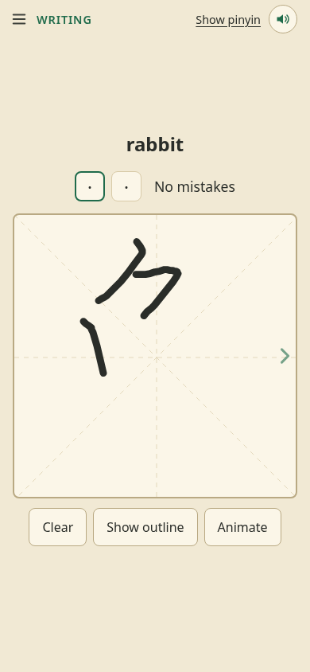
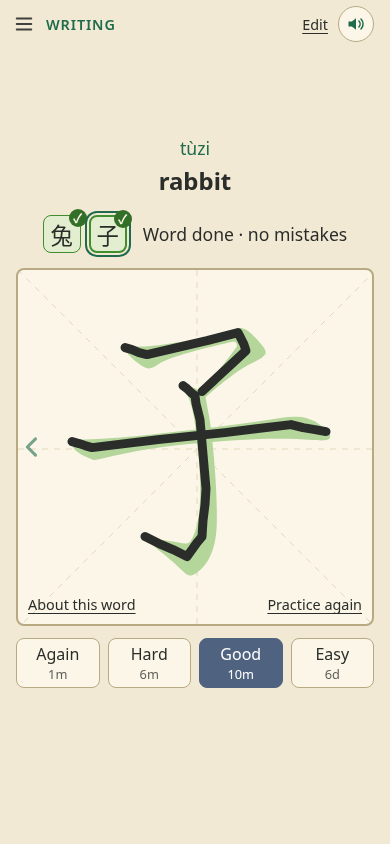
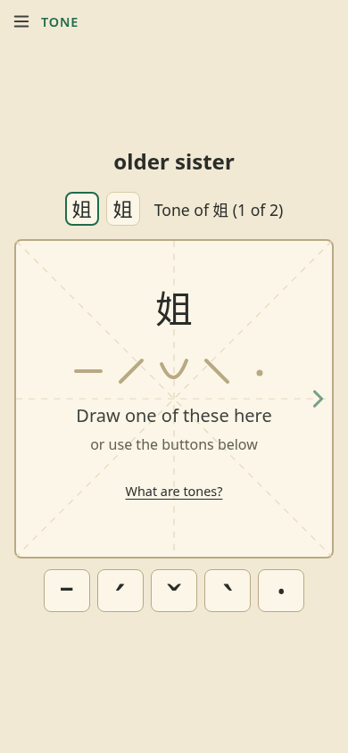
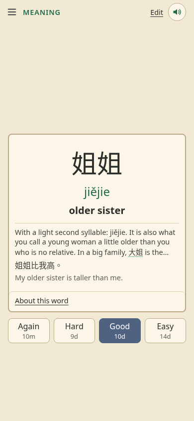
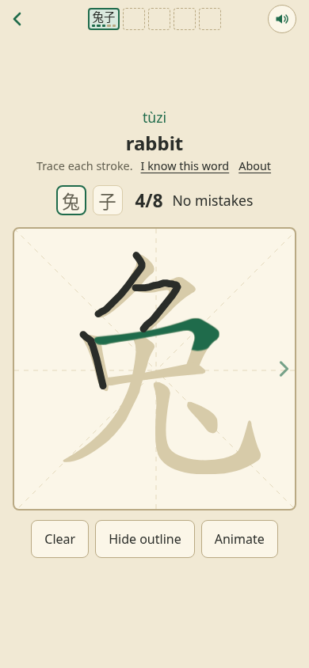

Make Chinese words stick, one stroke at a time.
Each word gets four cards: write it, give its tone, recall its pinyin and its meaning. Every card comes back just before you would forget it.
Open the appFree and open source (GPL-3.0). No account, no ads, and it works offline, on a phone, tablet or computer.
Try it: write the character in the square with a finger, stylus or mouse. This is the app's own writing, so it checks each stroke.
The practice square couldn't load. Open the app to write.
How a word sticks
-
Learn it A new word comes with its meaning, its tone, a recording of a native speaker (for most words) and a short lesson that shows the strokes one at a time.
-
Write it from memory Write the characters yourself, and the app checks every stroke. Each word also has cards for tone, pinyin and meaning, scheduled on their own.
-
Review it when it is due A spaced-repetition schedule (FSRS) brings each card back as you are about to forget it. Cards you keep missing are pointed out, so you can give them extra help.
-
See it in use Each word has a page with its characters taken apart. Common words add example sentences, learning tips and memory aids, described below.
Words, taken apart
Common words come with the pieces that help you remember them. This is the app's page for 姐姐, "older sister".
- Characters and their parts
- A word's page breaks it into characters, and each character into its parts. In sound-meaning characters the parts are labeled "meaning" and "sound". Tap any part to open its own page.
- How close the sound part is
- Under each sound-meaning character, the page says how closely the sound part still matches its reading: the same, only the tone differs, rhymes, a hint, or changed since.
- Learning tips and memory aids
- A short note on how the word is used, and a story for characters that are easy to forget. They are written with AI and may contain mistakes.
- Example sentences
- Tap a word in the sentence for its reading, meaning and a recording. Turn the sentence into cards, to read it or to write the missing word, or switch on a setting that adds it when you learn the word.
Start from a list, or bring your own words
- Ready-made lists
- HSK 3.0, HSK 2.0, TOCFL and the 214 radicals. Each level is a deck, with sub-decks that group related words by topic.
- Words of your own
- Add any word from the built-in dictionary, or load a whole list from a file. A word can sit in several decks and keeps one schedule.
- Traditional or simplified
- Both are fully supported. Traditional follows Taiwan's standard forms, and you can study one script, the other, or both. Readings can be shown in pinyin, zhuyin or both, and as mainland, Taiwan or both.
- Your progress
- The Progress tab shows your cards, the days you studied, time spent and words learned over time.
- Streaks, if you like them
- A day counts once you've studied enough, 10 cards or 2 new words by default. The app shows your streak briefly, and you can switch streaks off in Settings.
Already studying somewhere else?
Bring your Skritter or Anki history with you. Schedules and every review come along, so you carry on where you stopped.
Skritter has no export button. Its support sends a .zip on request, and the app reads
it. Anki decks (.apkg, .colpkg) import the same way.
Step by step: importing from Skritter.
Writing that works the way you write
- Your handwriting stays on screen
- Your strokes stay as you drew them, or snap to the printed stroke if you prefer. Stylus and tablet work well.
- Grading that isn't fussy
- A small, awkward stroke passes when written reasonably, and common handwriting shortcuts count, so 子 in two strokes is fine. Wrong strokes are refused, and a hint comes after a few misses.
Your words stay yours
Everything is stored on your device, and the app works offline. There is no account, and nobody but you can read your words or progress.
Sync between devices is optional. Files are encrypted on the device before they are sent, so the server only ever holds what it cannot read. You can also run your own sync server. Backups are a single file that opens on any device.
How it looks
Each word has four kinds of card, and a short lesson when it is new.





Questions
- Is it free?
- Yes. The app is free and open source under the GPL-3.0. It has no ads and no account.
- Does it work offline?
- Yes. The app saves its stroke data and dictionary in the background (about 14 MB), so once that is done you can study without a connection. Your words are always on your device.
- Do I need an account?
- No. Your words and progress stay on your device. Syncing between devices is optional and encrypted on the device first.
- What if I clear my browser data or lose my device?
- Your words live in your browser, so keep a backup: the app can save everything as one file, and sync keeps a second, encrypted copy. The app reminds you to back up.
- Can I bring my Skritter or Anki history?
-
Yes. It imports Anki decks (
.apkg,.colpkg) and the .zip that Skritter's support sends on request, with schedules and review history. How to import from Skritter. - Traditional or simplified?
- Both. Traditional follows Taiwan's standard forms. You choose a script for each word, or study both.
- What do I study?
- HSK 3.0, HSK 2.0 and TOCFL word lists, the 214 radicals, or your own words. Each word has cards for writing, tone, pinyin and meaning. Common words also have a page with their parts, learning tips and an example sentence.
- Which devices does it run on?
- Any modern browser on a phone, tablet or computer. Choose "Install app" or "Add to Home Screen" in the browser menu and it opens like any other app.
Free software, open to everyone
The app is free and its code is open, under the GPL-3.0. You can read it, run it, change it, and report problems or ideas on GitHub. The interface is currently available in English, Italian and German; to ask for another language, open an issue there.